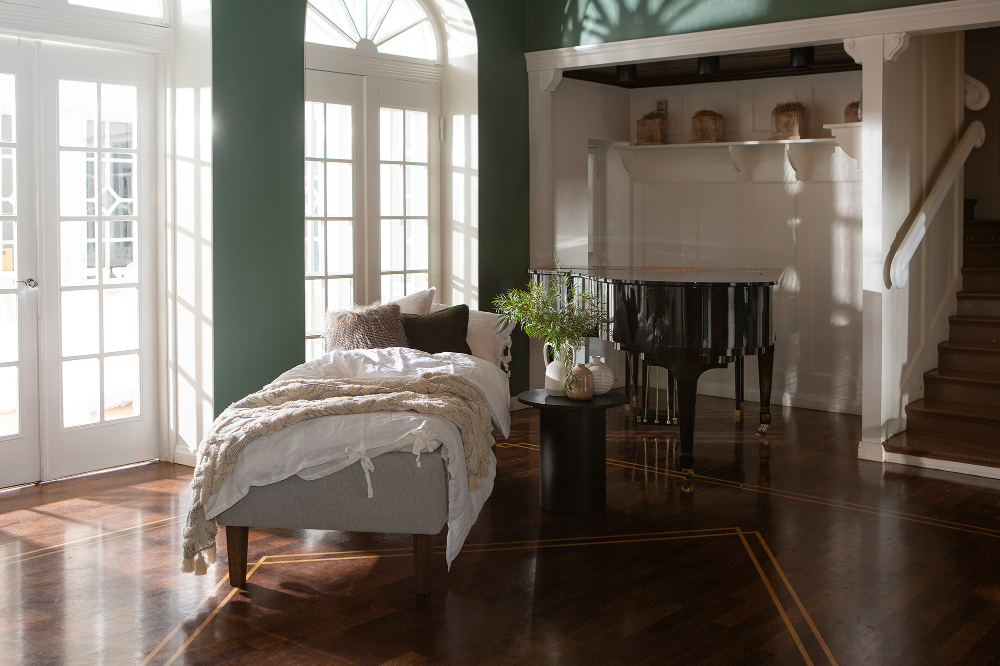
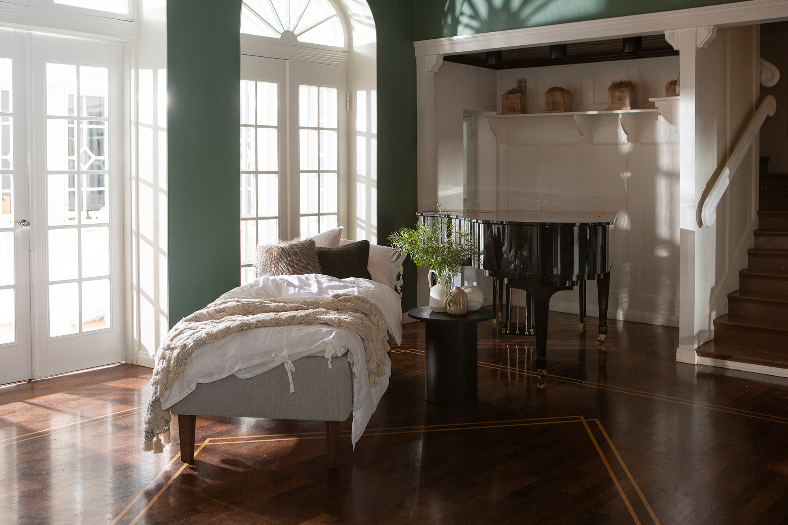

Moon Bronze divan bed 80x200, pocket 5-zone. Primo 84 light grey
197653
 

Description
Experience refined comfort and timeless style with the Moon Bronze divan bed, sized 80x200 cm, featuring an advanced 5-zone pocket spring system tailored to support your body’s contours for superior sleep quality. Upholstered in elegant light grey Primo 84 fabric, this bed embodies understated sophistication suitable for modern bedrooms.
This Bronze tier divan is mounted on 23cm tall smoked ash cone-shaped wooden legs that elevate its appearance while facilitating easy floor cleaning. The durable wood frame assures lasting strength, backed by a 4000-day quality guarantee, ensuring your investment in restful sleep.
Enhance your sleep setup by adding compatible mattress toppers and headboards (available at extra cost) to customize comfort and style to your individual preferences. The bed’s neutral light grey tone complements various interior decors seamlessly.
Maintain upholstery freshness by regular vacuuming and cleansing with a damp cloth, ensuring long-term care ease. As part of the exclusive NEST & LIVING collection, this divan bed merges functional excellence with aesthetic appeal, providing a luxurious foundation for nights of rejuvenation.
Technical specifications
| Size | 80 × 200 cm |
|---|---|
| Color | Light grey |
| Comfort system | 5-zone pocket spring system |
| Tier | Bronze |
| Frame material | Durable wood frame with 4000-day quality guarantee |
| Legs | 23 cm tall cone-shaped smoked ash wooden legs |
| Upholstery | Primo 84 fabric |
| Mattress topper | Not included (optional accessory) |
| Headboard | Not included (optional accessory) |
| Care instructions | Regular vacuuming and wiping with a damp cloth |